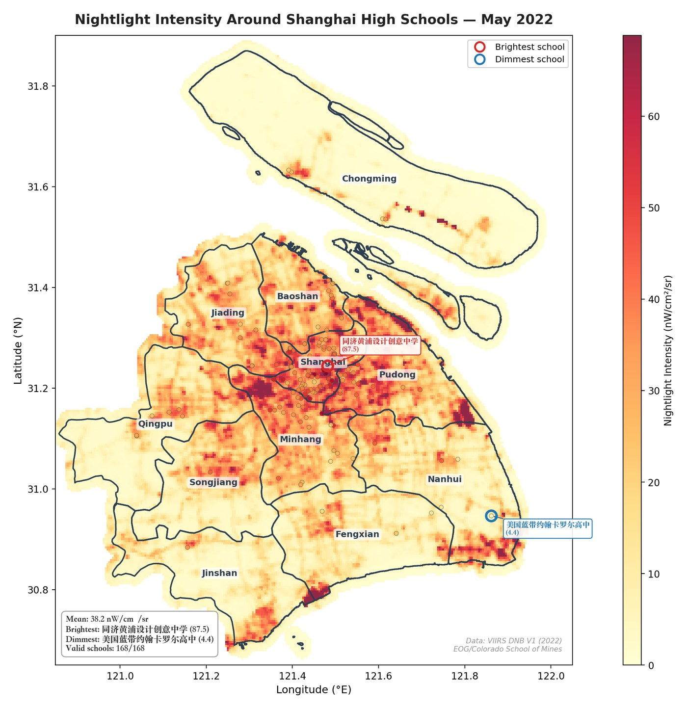
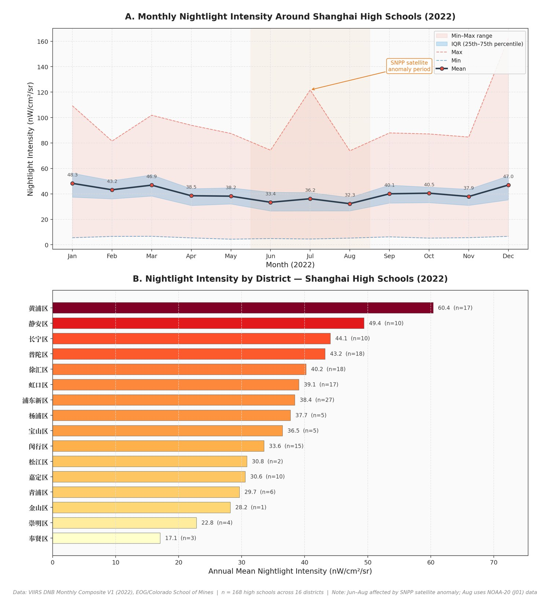

Public policy, political behavior, and spatial data
Yidan Xia
I study how policy goals move through institutions, data, and everyday life. This site gathers research projects, methods notes, and work in progress.
Research Projects
The site is organized as a portfolio: each project has its own page, with a short entry point here and a fuller research narrative inside.

Preference Mismatch and Policy Implementation
A public choice analysis of China’s Double Reduction policy using VIIRS nighttime light data and synthetic control methods.

Spatial Methods Notebook
Placeholder for future GIS, remote sensing, and data visualization projects.

Policy Notes and Writing
Placeholder for essays, proposals, conference notes, and other academic writing.
Research Style
I am interested in how political and administrative incentives become visible in behavior, and in when our measures fail to see what we hoped they could see.
Institutional Questions
I begin with puzzles about implementation: who wants what, who can observe what, and what happens when formal policy goals meet local incentives.
Empirical Caution
I treat data as evidence, but also as an object of inquiry. A proxy that looks elegant still needs to survive tests of validity, timing, and scale.